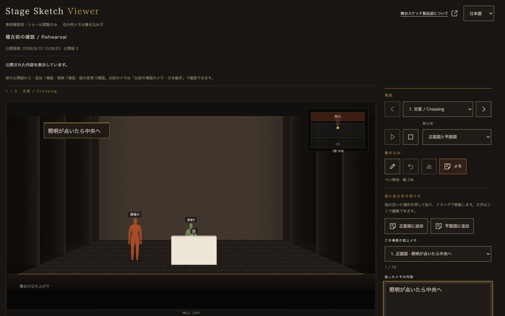
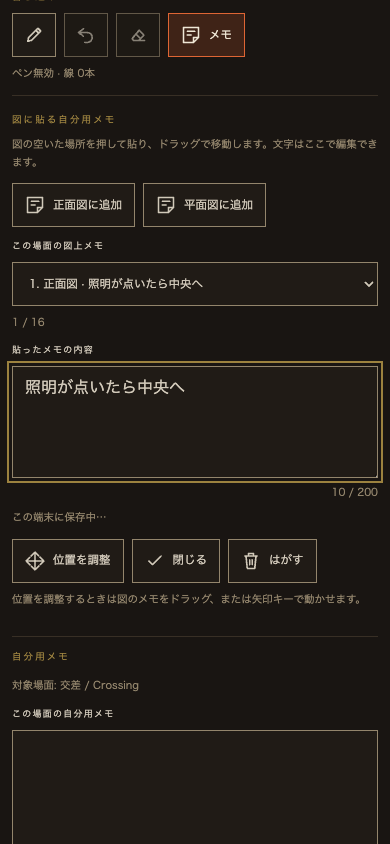

Viewerの文字を、本家の密度へ
2026年9月10日・ローカル反映。道具・説明・入力項目の大きさを本家の実画面と照合し、Viewerだけ調整しました。
| 用途 | 以前 | 調整後 |
|---|---|---|
| 本文・道具 | 14px | 11.5px |
| 説明・状態 | 14px | 10.5px |
| 区画見出し | 14px | 9.5px |
| 入力項目名 | 14px | 9px |
| ショー名 | 18px | 13px |
本家の道具「メモ」は10.5px、場面操作11px、入力11.5px、保存の区画見出し9.5pxでした。書体は共通sans / serifを継承。ボタンの44px操作域とフォーカス表示を保ち、タッチ端末の入力は16pxにしています。図上の付箋15pxと、最上部のViewer名24pxは維持しています。
確認結果
関連Nodeテスト59件成功。stage.html / study-frame.htmlと正本の一致、git diff --checkも成功。日本語・英語、PC・タブレット・縦横スマートフォン相当の確認結果は下記の測定記録に保存しています。iPhone Safari実機は未確認です。
design-lint：NG0・WARN0・測定不可0、本文の最悪コントラスト4.91:1、44px未満の操作0件。
日英8画面幅の結果 · コントラスト・行間・操作域 · 更新したトークンシート
調整後のデスクトップ

タッチ端末の入力欄

製品コードの変更はstage-study.cssのViewer内指定と、study.htmlのCSS参照版だけです。オーナーの共有モーダル、API、保存データ、正本の舞台図には変更を加えていません。作業中に他のファイルへ入った変更を保持し、commit・push・公開・デプロイは行っていません。